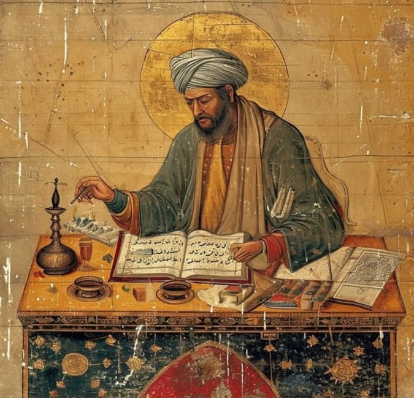

Who Was Avicenna (Ibn Sina)?
Avicenna, known in Arabic and Persian as Ibn Sina (Abū ʿAlī al-Ḥusayn ibn ʿAbdillāh ibn Sīnā, c. 980–1037 CE), was one of the most influential philosophers and physicians of the medieval Islamic world. He developed one of the most comprehensive philosophical systems of the medieval period, and his ideas profoundly shaped later Islamic philosophy as well as Jewish and Christian philosophical traditions.
Avicenna was active in the eastern regions of the Islamic world, particularly in Central Asia and Persia, during the tenth and eleventh centuries. Building upon the work of earlier philosophers such as Al-Kindi and Al-Farabi, as well as the Greek philosophical tradition, he developed a systematic framework encompassing metaphysics, logic, natural philosophy, psychology, and other branches of knowledge.
His philosophical thought is especially famous for its distinction between essence and existence, its analysis of necessary and contingent being, and its influential arguments concerning God as the Necessary Existent. These ideas became central to later debates in both Islamic and medieval European philosophy.
Avicenna was also one of the most important physicians of the medieval world. His vast medical encyclopedia, the Canon of Medicine, became a major reference work in Islamic and later European medicine, while his philosophical summa, the Book of Healing, presented his systematic account of logic, natural science, mathematics, and metaphysics. Together, these works demonstrate the extraordinary range and lasting influence of his intellectual achievement.
Avicenna: Quick Facts
- Full name — Abū ʿAlī al-Ḥusayn ibn ʿAbdillāh ibn Sīnā
- Known as — Ibn Sina or Avicenna
- Born — c. 980 CE, near Bukhara
- Died — 1037 CE, Hamadan
- Associated with — Bukhara, Gurganj, Rayy, Hamadan, and Isfahan
- Philosophical tradition — Islamic philosophy, Peripatetic (Aristotelian-Neoplatonic) tradition
- Major influences — Aristotle, Neoplatonism, Al-Farabi, Islamic theology
- Major philosophical subjects — Metaphysics, logic, psychology, epistemology, cosmology, natural philosophy, and ethics
- Famous philosophical work — The Book of Healing
- Famous medical work — The Canon of Medicine
- Famous thought experiment — The Flying Man argument
Avicenna's Early Life and Historical Background

Avicenna (Ibn Sina) was born around 980 CE near Bukhara, in the eastern Islamic world under the Samanid dynasty. Much of what is known about his early intellectual development comes from an autobiographical account later completed by his student al-Juzjani. According to this account, Avicenna showed exceptional intellectual ability and received an extensive education in the Quran, Arabic literature, Islamic scholarship, logic, mathematics, and philosophy.
He went on to study logic, geometry, astronomy, and natural philosophy, while also turning to medicine. His autobiographical account presents medicine as a field he found comparatively accessible, and he soon acquired a reputation as a skilled physician. A famous episode from the same account describes his difficulty understanding Aristotle's Metaphysics until he encountered a work by Al-Farabi explaining the purpose of Aristotle's treatise.
Avicenna's intellectual life unfolded during a period of major political change in Central Asia and Persia. The decline of the Samanid state and the struggles among regional dynasties forced him to move repeatedly in search of patronage and security. He spent important periods of his life in places including Gurganj, Rayy, Hamadan, and Isfahan.
Throughout these movements, Avicenna served rulers in several capacities, including as a physician, adviser, and administrator. He was at times involved directly in political affairs and even served as vizier in Hamadan. His career also included periods of confinement and political danger, yet he continued to write extensively, producing a philosophical and scientific corpus that would transform the history of Islamic and medieval philosophy.
Was Avicenna a Doctor or a Philosopher?
Avicenna was both a physician and a philosopher, and separating these identities too sharply can obscure the unity of his intellectual project. He was one of the most important systematic philosophers of the medieval Islamic world while also producing one of the most influential medical encyclopedias in history. His interests extended further into logic, psychology, natural science, mathematics, and questions concerning religion and prophecy.
His philosophy and medicine shared a common concern with explanation, causation, and the ordered structure of reality. Natural philosophy provided a theoretical framework for understanding bodies, motion, sensation, and life, while medicine investigated health, disease, and the practical conditions of the human body. The disciplines were distinct, but they belonged to a broader scientific worldview.
Avicenna's psychology is particularly important for understanding this connection. His analysis of perception, imagination, memory, and the rational soul belongs simultaneously to philosophical inquiry and to a broader investigation of human nature. Questions about the relation between body and soul therefore occupied a central position in both his metaphysical and scientific thought.
Avicenna the philosopher and Avicenna the physician are therefore best understood as parts of a single intellectual enterprise. He sought a rationally organized understanding of reality as a whole, ranging from the most abstract questions concerning existence and God to the concrete study of the human body and its illnesses.
Avicenna and Greek Philosophy
Like Al-Kindi and Al-Farabi before him, Avicenna worked within a philosophical tradition made possible by the transmission and transformation of Greek learning into Arabic. Aristotle was one of his most important philosophical authorities, especially in logic, natural philosophy, psychology, and metaphysics, although Avicenna frequently developed his own arguments beyond the positions found in Aristotle's surviving works.
His philosophical inheritance was not exclusively Aristotelian. The Arabic philosophical tradition had also absorbed important ideas from late antique Neoplatonism, sometimes through texts incorrectly attributed to Aristotle. These influences helped shape Avicenna's account of the relationship between the First Principle and the ordered hierarchy of the cosmos.
Avicenna's theory of emanation, for example, combines philosophical themes derived from Aristotle with ideas associated with Plotinus and other late antique thinkers. Yet it would be misleading to describe his philosophy as merely a mixture of borrowed doctrines. He developed an original system with its own distinctive concepts, arguments, and technical vocabulary.
His achievement was therefore one of philosophical transformation. Avicenna inherited a complex Greek and Arabic intellectual tradition and reorganized it into a remarkably systematic account of logic, natural science, psychology, metaphysics, theology, and human knowledge. This system later became so influential that generations of philosophers defined their own positions partly through engagement with Avicennian thought.
Avicenna's Metaphysics: The Necessary Existent
The most famous feature of Avicenna's metaphysics is his analysis of existence in terms of necessity and possibility. An existent may be necessary in itself, meaning that it does not depend upon a cause for its existence, or possible in itself, meaning that its existence is not explained by its own nature and therefore depends upon something else.
Possible beings require an explanation for why they exist rather than do not exist. When such a being is brought into existence by a cause, it becomes necessary through that cause while remaining possible in itself. Avicenna uses this distinction to analyze the dependence of the entire order of caused beings upon a first principle that is not itself dependent upon another cause.
This first principle is the Necessary Existent, whose existence belongs to it in a fundamentally different way from the existence of all caused things. The Necessary Existent is uncaused, unique, and absolutely independent. Avicenna identifies this principle with God, making the analysis of existence itself the foundation of his philosophical theology.
Avicenna's argument is especially important because it approaches the question of God through the structure and modality of being rather than beginning primarily with motion or physical change. Later Islamic, Jewish, and Christian philosophers engaged extensively with this distinction between what is necessary and what is dependent or possible, making it one of the most influential developments in medieval metaphysics. :contentReference[oaicite:1]{index=1}
Avicenna's Book of Healing
The Book of Healing (Kitāb al-Shifāʾ) is Avicenna's great philosophical encyclopedia and one of the largest systematic works produced in medieval philosophy. Despite its title, it is not a medical book. Its purpose is intellectual and philosophical: the "healing" in its title concerns the human soul's movement away from ignorance through the acquisition of rational knowledge.
The work is organized into major divisions devoted to logic, natural philosophy, mathematics, and metaphysics. Its discussions range across subjects including physics, the soul, sensation, astronomy, geometry, and the nature of existence. In this way, the Book of Healing presents Avicenna's attempt to construct a comprehensive scientific and philosophical account of reality.
The metaphysical sections contain some of Avicenna's most influential arguments concerning being, essence, existence, causation, necessity, possibility, and the First Principle. These discussions became central to the later development of Avicennism and to medieval philosophical debates in both the Islamic world and Latin Europe.
Avicenna later presented parts of his philosophical system in other forms. The Book of Salvation offers a more concise presentation of material developed elsewhere, while Remarks and Admonitions (al-Isharat wa al-Tanbihat) became one of his most important later works and was the subject of extensive commentary and debate among subsequent Islamic philosophers.
What Is Avicenna's Flying Man Argument?
The Flying Man argument is Avicenna's most famous thought experiment concerning self-awareness. He asks us to imagine a human being created fully formed and suddenly suspended in empty space, with the senses prevented from receiving information about the external world and with the limbs arranged so that no bodily contact provides awareness of the body.
Avicenna argues that such a person would nevertheless affirm their own existence. Even without awareness of external objects or of the body, the person would still possess an immediate awareness of being a self. This is intended to show that self-awareness cannot simply be reduced to awareness of a particular bodily organ or to sensory perception.
The argument therefore plays an important role in Avicenna's philosophical psychology. It supports his claim that the human soul has a reality that cannot be identified straightforwardly with the body. However, the Flying Man is best understood as an argument concerning the immediacy of self-awareness and the nature of the soul, rather than as a simple modern-style proof that the mind can exist independently of every bodily condition.
The thought experiment has remained philosophically influential because it raises a fundamental question: what is the basis of our awareness of ourselves? Long before modern debates about consciousness and personal identity, Avicenna used the imagined isolation of the Flying Man to investigate whether awareness of the self is more fundamental than awareness of the external world.
Avicenna's Theory of the Soul
Avicenna's philosophical psychology, developed most extensively in the psychological sections of The Book of Healing, draws upon Aristotle's On the Soul while developing a more elaborate account of the faculties of living beings. He distinguishes vegetative, animal, and rational powers, each corresponding to different forms of life and activity.
The human rational soul occupies a distinctive position within this hierarchy. Avicenna argues that it is not reducible to the material body and that its intellectual activity cannot be adequately explained as the operation of a bodily organ. For this reason, he treats the rational soul as an immaterial substance capable of surviving bodily death.
His analysis of the soul also includes a detailed theory of the internal senses. These faculties explain how sensory information is organized, retained, combined, and interpreted through powers such as imagination, estimation, and memory. Avicenna's psychology was therefore not limited to abstract arguments about immortality but also offered a sophisticated account of perception and mental activity.
The theory of the soul connects directly with Avicenna's epistemology. Human knowledge begins with sensory and imaginative activity but can develop toward intellectual understanding. The rational soul's movement from potential understanding to actual knowledge thus forms a bridge between his natural philosophy, metaphysics, theory of knowledge, and account of human perfection.
Avicenna's Theory of Knowledge
Avicenna's epistemology explains human knowledge as a movement from sensation toward intellectual understanding. Sense perception provides awareness of particular things, while the internal senses organize and preserve sensory forms. The intellect then concerns universal and intelligible meanings that cannot simply be identified with individual objects of perception.
A central role in this process belongs to the incorporeal Active Intellect. In Avicenna's cosmological and psychological system, the human intellect does not produce intelligible forms entirely from itself. The Active Intellect plays a crucial role in the actualization of human understanding and in the acquisition of intelligible knowledge.
Avicenna also gave special importance to intuition. Some individuals, he argued, can grasp the middle term required for a demonstration with extraordinary speed and clarity. At its highest level, this capacity helps explain exceptional intellectual insight and forms part of his philosophical account of prophecy.
His epistemology therefore combines discursive reasoning with a broader hierarchy of intellectual capacities. Ordinary human beings acquire knowledge gradually through learning and demonstration, while exceptionally gifted individuals may achieve certain intellectual insights with remarkable immediacy. Both remain part of Avicenna's larger account of the relation between the human intellect and the intelligible order of reality.
Avicenna's Cosmology and Theory of Emanation
Avicenna's cosmology describes an ordered universe whose existence depends ultimately upon the Necessary Existent. Drawing upon late antique philosophical traditions, he explains the structure of the cosmos through a hierarchy of separate intellects associated with the celestial spheres. This framework attempts to account for how a multiplicity of beings can depend upon a single, absolutely simple First Principle.
In the traditional Avicennian cosmological model, the First Principle gives rise to the first intellect, and the contemplation and intelligible activity of the separate intellects explain the further differentiation of the cosmic hierarchy. The series ultimately reaches the Active Intellect, which is associated with the sublunar world and plays an important role in Avicenna's account of human knowledge.
This process is commonly described as emanation, but the term should not suggest that the universe simply breaks off from God as a physical substance divides into pieces. Avicenna's account is a theory of ontological dependence: the existence and order of the cosmos derive from a hierarchy of causes whose ultimate source is the Necessary Existent.
Avicenna's cosmology combines Aristotelian conceptions of an ordered and eternally moving cosmos with Neoplatonic ideas concerning the derivation of multiplicity from unity. He thereby constructed one of the most influential cosmological systems of medieval philosophy, although later philosophers and theologians strongly debated both its astronomical assumptions and its metaphysical implications. :contentReference[oaicite:2]{index=2}
Avicenna and the Canon of Medicine
Alongside his philosophical work, Avicenna produced the Canon of Medicine (al-Qanun fi al-Tibb), one of the most influential medical works of the medieval world. The work brought together major strands of Greek and Islamic medical knowledge within a highly organized and systematic framework.
The Canon addresses general principles of medicine as well as diseases, diagnosis, treatment, simple and compound medicines, and the practical organization of medical knowledge. Its systematic method contributed greatly to its long-lasting influence and made it an important reference work for generations of physicians and students.
Through translation into Latin, the Canon of Medicine became an important text in European medical education as well as in the Islamic world. Its authority endured for centuries, although its role and dominance varied across institutions and historical periods as medical knowledge gradually changed.
Avicenna's medical writing illustrates the same systematic impulse found in his philosophy. He sought to classify knowledge, identify causes, distinguish general principles from particular cases, and place individual observations within an ordered theoretical framework. :contentReference[oaicite:3]{index=3}
Avicenna's Philosophy of Ethics and Happiness
Avicenna's ethical thought is closely connected with his philosophical psychology and metaphysics. Human beings possess different powers and desires, but the rational soul occupies the highest position because it is capable of intellectual knowledge. Human perfection therefore involves the proper development and ordering of the soul's capacities.
Intellectual perfection plays a central role in Avicenna's account of happiness. The highest form of human fulfillment is connected with the acquisition of knowledge and the rational soul's increasing relation to the intelligible order of reality. Ethical development is consequently not merely a matter of external behavior but of transforming the character and capacities of the soul.
Avicenna also recognized the practical importance of moral discipline, social life, law, and political organization. His discussions of prophecy and religion connect the philosophical pursuit of truth with the need for communities to receive guidance through laws and symbols appropriate to collective human life.
His ethical thought is therefore best understood within his larger philosophical system. Questions concerning virtue and happiness cannot be separated from his theories of the soul, knowledge, prophecy, and the ultimate perfection of human intellectual capacities.
Major Works of Avicenna (Ibn Sina)
Avicenna was an extraordinarily prolific author, and the number of works attributed to him is usually placed in the hundreds, although questions of authorship and the survival of particular texts make an exact total difficult to establish. His writings range across philosophy, medicine, logic, natural science, theology, and shorter treatises on specialized subjects.
- The Book of Healing — Avicenna's major philosophical encyclopedia, covering logic, physics, psychology, and metaphysics.
- The Canon of Medicine — A comprehensive medical encyclopedia that became the standard medical reference across the Islamic world and medieval Europe.
- The Book of Salvation — A condensed philosophical companion to The Book of Healing.
- Remarks and Admonitions (al-Isharat wa al-Tanbihat) — A later, highly influential philosophical work covering logic, natural philosophy, metaphysics, and spiritual themes.
- The Book of Definitions — A short work clarifying key philosophical terms and concepts.
- Autobiography and biographical continuation (with his student al-Juzjani) — An important primary source for Avicenna's early life and intellectual development.
Avicenna's Main Philosophical Ideas
1. The Necessary Existent
Avicenna distinguishes between what is necessary in itself and what is possible in itself, arguing that dependent beings ultimately require a first principle whose existence is uncaused and necessary.
2. The Flying Man and Self-Awareness
Through the Flying Man thought experiment, Avicenna argues that a person can possess immediate awareness of the self even without awareness of external objects or of the body, supporting his account of the soul's distinctive immaterial reality.
3. Emanation and Cosmic Order
Avicenna explains the ordered multiplicity of the cosmos through a hierarchy of causes and separate intellects ultimately dependent upon the Necessary Existent, combining Aristotelian and Neoplatonic philosophical traditions.
4. Knowledge and the Active Intellect
Human knowledge begins with sensation and develops toward intellectual understanding, while the Active Intellect plays a crucial role in the actualization of intelligible knowledge within Avicenna's philosophical system.
5. Philosophy, Medicine, and the Human Being
Avicenna pursued philosophy and medicine as distinct but connected sciences. Together they contributed to his wider effort to understand reality, nature, the human body, the soul, and the causes governing both health and knowledge.
Avicenna, Al-Kindi, and Al-Farabi: What Is the Connection?
Avicenna, Al-Kindi, and Al-Farabi represent major stages in the development of philosophy in the Arabic-speaking Islamic world. Al-Kindi helped establish an early philosophical vocabulary in Arabic and participated in the intellectual culture surrounding the translation and interpretation of Greek scientific and philosophical works.
Al-Farabi developed a highly influential account of logic, philosophy, metaphysics, politics, and the classification of the sciences. Avicenna himself reports that a work by Al-Farabi helped him understand the aim of Aristotle's Metaphysics, demonstrating the important place Al-Farabi occupied in his intellectual development.
Avicenna inherited this philosophical tradition but transformed it into a more comprehensive and distinctive system. His work introduced new formulations of problems concerning existence, necessity, the soul, causation, and knowledge, and these developments became central to the subsequent history of Islamic philosophy.
The relationship among these philosophers should therefore be understood as intellectual development rather than simple succession. Each worked with inherited Greek materials while producing new philosophical frameworks, and Avicenna's later influence became possible partly because he built upon—and critically transformed—the work of those who came before him.
Avicenna's Influence and Legacy
Avicenna's influence on later Islamic philosophy was immense. Avicennism became one of the dominant philosophical frameworks with which later thinkers had to engage, whether through acceptance, revision, or criticism. Philosophers and theologians, including Al-Ghazali, addressed problems and concepts whose formulation had been profoundly shaped by Avicenna's system.
His influence extended especially strongly into Persian philosophical traditions, where Avicennian thought remained a major point of reference for centuries. Later philosophers developed, criticized, and transformed his theories, ensuring that his philosophy remained an active intellectual tradition rather than simply a collection of historical doctrines. :contentReference[oaicite:4]{index=4}
Avicenna's works were also translated into Latin and entered the philosophical culture of medieval Europe. His discussions of being, essence, existence, the soul, causation, and God influenced scholastic debates and became important sources for philosophers who sometimes adopted his arguments while rejecting other parts of his system.
His Canon of Medicine gave him an equally important reputation in the history of science and medicine. Through its long circulation in the Islamic world and in Latin Europe, Avicenna became one of the rare historical figures whose influence extended deeply into both philosophy and medical education.
Few medieval thinkers produced a philosophical system of such breadth and subsequent influence. Avicenna's legacy lies not only in individual doctrines but in his ability to construct an integrated account of logic, science, metaphysics, psychology, theology, and human knowledge. :contentReference[oaicite:5]{index=5}
Avicenna's Philosophy Explained Simply
Avicenna (Ibn Sina) can be understood as a philosopher who attempted to build a unified explanation of reality. He asked what it means for something to exist, why dependent things require causes, how the human soul knows itself and the world, and how the entire cosmos ultimately depends upon a first principle.
- Why does anything exist? Avicenna distinguishes between things that depend upon causes and a Necessary Existent that does not depend upon anything else for its existence.
- What is the soul? The human rational soul is an immaterial principle whose reality cannot be reduced simply to the body. The Flying Man explores this through the problem of immediate self-awareness.
- How does the universe work? The cosmos forms an ordered hierarchy of causes and intellects whose ultimate source is the Necessary Existent.
- How do humans know things? Knowledge begins with sensation and develops toward intellectual understanding, with the Active Intellect playing a central role in Avicenna's account of intelligible knowledge.
- Why is Avicenna also famous in medicine? Because his Canon of Medicine organized a vast body of medical knowledge into a systematic framework that remained influential for centuries.
Why Is Avicenna Important in the History of Philosophy?
Avicenna is important because he created one of the most comprehensive and influential philosophical systems of the medieval period. His work integrated logic, natural philosophy, psychology, metaphysics, and theology into a highly structured intellectual framework that shaped philosophical debate for centuries. :contentReference[oaicite:6]{index=6}
His analysis of necessity and possibility, his account of the Necessary Existent, his theories of the soul and self-awareness, and his explanation of human knowledge became major subjects of subsequent philosophical and theological discussion. His influence extended across Islamic, Jewish, and Christian intellectual traditions.
Avicenna is also historically remarkable because his achievements were not confined to philosophy. His Canon of Medicine made him one of the most influential physicians of the medieval world, demonstrating the extraordinary breadth of his scientific and intellectual work.
His lasting importance lies in both the originality of his ideas and the systematic power of his philosophy. Later thinkers could accept, modify, or reject Avicenna's conclusions, but for centuries they could scarcely ignore the conceptual framework he had created. :contentReference[oaicite:7]{index=7}
Frequently Asked Questions About Avicenna
Who was Avicenna?
Avicenna, known as Ibn Sina, was an eleventh-century Islamic philosopher and physician regarded as one of the most systematic thinkers in the history of Islamic philosophy.
What is Avicenna known for?
Avicenna is known for his systematic philosophy of the Necessary Existent, the Flying Man argument concerning the soul, his philosophical encyclopedia The Book of Healing, and his medical encyclopedia The Canon of Medicine.
Was Avicenna a doctor or a philosopher?
Avicenna was both. He was a practicing physician and the author of the influential Canon of Medicine, as well as a systematic philosopher whose ideas shaped Islamic and medieval European thought.
What is Avicenna's philosophy?
Avicenna's philosophy combines Aristotelian and Neoplatonic ideas into a systematic account of metaphysics, logic, psychology, cosmology, and ethics, centered on the distinction between necessary and contingent existence.
What is the Necessary Existent in Avicenna's philosophy?
The Necessary Existent is Avicenna's term for a being whose existence requires no external cause. He identifies this being with God and argues that all contingent existence ultimately depends on it.
What is Avicenna's Flying Man argument?
The Flying Man argument imagines a person with no sensory contact with their body or the external world who would nevertheless still affirm their own existence, an argument Avicenna uses to support the soul's independence from the body.
What did Avicenna believe about the soul?
Avicenna believed the human rational soul is an immaterial substance distinct from the body, capable of surviving the body's death.
What is Avicenna's most famous book?
Avicenna's most important philosophical work is The Book of Healing, while his most famous medical work is The Canon of Medicine.
How did Avicenna influence later philosophy?
Avicenna's systematic philosophy, sometimes called Avicennism, influenced later Islamic thinkers such as Al-Ghazali and was translated into Latin, where it shaped medieval European scholastic philosophy and theology.
What is the difference between Avicenna and Al-Kindi?
Al-Kindi was an earlier, foundational figure who helped establish Arabic philosophical vocabulary and promote Greek philosophy, while Avicenna, working a century later, produced a far more systematic and comprehensive philosophical framework built partly on the groundwork laid by Al-Kindi and Al-Farabi.
Did Avicenna believe in God?
Yes. Avicenna's metaphysics argues for the existence of a Necessary Existent, which he identifies with God, as the ultimate ground of all contingent existence.
Related Islamic and Arabic Philosophers
Explore other major thinkers in the development of Islamic philosophy, Arabic philosophy, Persian philosophy, and medieval intellectual history.
Related Areas of Philosophy
Avicenna's work connects the history of Islamic philosophy with metaphysics, epistemology, philosophy of mind, ethics, cosmology, and the transmission of Greek philosophy.
Why Avicenna Still Matters
Avicenna occupies a central position in the history of Islamic and world philosophy. Building on the earlier work of Al-Kindi and Al-Farabi, he constructed the most systematic philosophical framework of the classical Islamic period, addressing logic, metaphysics, psychology, cosmology, and ethics within a single coherent system.
His arguments for the Necessary Existent and the immaterial soul, together with his Flying Man thought experiment, remain among the most discussed contributions of medieval philosophy. His parallel achievement in medicine, through the Canon of Medicine, gave him an influence that extended far beyond philosophy itself.
Understanding Avicenna also helps explain the intellectual background against which later thinkers such as Al-Ghazali and Averroes developed their own responses to the philosophical tradition.
Explore Great Philosophers